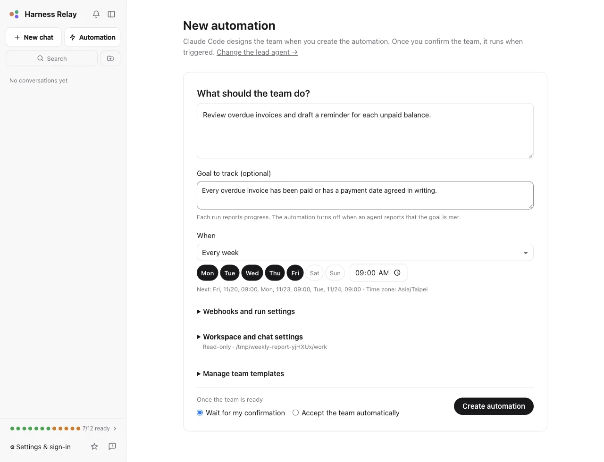
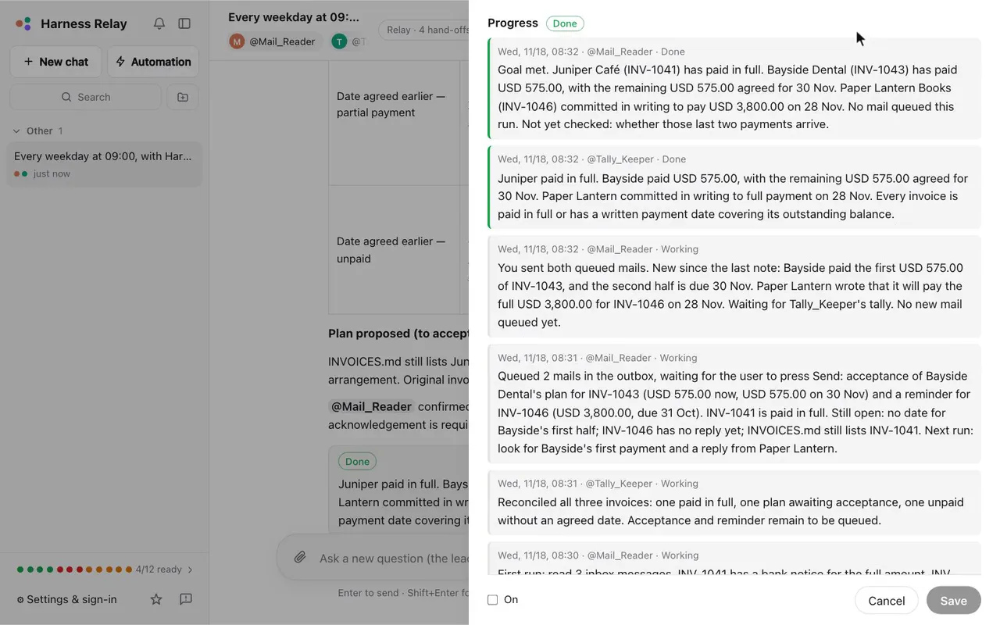

Automations
An automation sends the team a message as if you had sent it: at the times you set, when something happens, or when you click to run it. The team works while you are away, and you read what it did when you are back.
What an automation does
Some examples of what to hand over:
- Every weekday at 09:00: “@Reviewer look at the pull requests merged yesterday and list the risks.”
- When a mail from a customer arrives: “Triage this mail and draft a reply.”
- When a CI run fails: “CI failed: find out why.”
There are two ways to start one:
- New automation, the button with a lightning bolt beside New chat in the sidebar (it reads Automation where the whole name does not fit). It opens a chat for the automation, and the lead agent designs a team for its message.
- Automation at the top of a chat you already have. Its message then goes to that chat's team, which you must have confirmed first.
Harness Relay sends only while it is running, on a computer that is awake. A conversation has one automation.
Create one
- Click New automation in the sidebar.
-
Write the Message to send the team. As in a chat, members you
@mentionanswer it alone; the lead agent names the team's members after the names you mention. - Choose When it runs (see below), and, if you like, a Goal to track.
- Choose the working directory and the permission, as for a new chat, and whether the lead agent reviews the team's replies.
- Click Create automation. Its chat opens and the lead agent designs a team for the message: confirm it on its card. Nothing runs yet: the team gets the message at the times you set.

Run it now, pause it, delete it
Automation at the top of its chat opens the automation again. There, Run once now sends the message at once, to try it before its first time; untick On to pause it without deleting it (one with no set times has nothing to pause); and Delete automation removes it.
A clock next to the conversation in the sidebar shows it has an automation (point at it for the next time). It turns amber when the last time was not sent, or the last check of what it waits for failed. The messages it sends are marked Automation in the chat. If the team is still replying when a time comes, the message waits its turn, like one you send then.
When it runs
| When | What sends the message |
|---|---|
| No set times | Only Run once now, or a program calling its webhook. For a task you start yourself now and then. |
| Once | A date and time. |
| Every day | A time of day. |
| Every week | The days you pick, at a time. |
| Every few hours | Every so many hours, counted from when you set it. |
| When something happens | Something new that it waits for (below). |
Before you save, the next three times are shown, in the automation's time zone.
When something happens
Under What to wait for, choose what starts it. Harness Relay checks for it itself, every few minutes:
- A new mail arrives in one of your mail accounts, in a folder you pick (the inbox at first), optionally only from a sender or with words in the subject. Where the mail server can say at once that mail arrived, as Gmail and iCloud can, it starts within seconds.
- An event is about to begin in one of your calendars, a number of minutes before it begins.
-
A pull request or a failed CI run on GitHub, in a repository you name, checked with your own GitHub
CLI (
gh), signed in. -
A file appears or changes in the working directory, matching a pattern such as
reports/*.csv. Files the team itself changes there do not start it again.
The mail accounts and calendars are the ones you add under Settings → Tool library (see Tools). The first check only notes what is already there: what comes after it starts the automation, with a list of what is new for the agents to read. Add another waits for one more thing, up to five, and any of them starts it. Check now checks at once and says what it found. When a check fails, say a wrong password, the automation says why.
While nobody is watching
An automation's runs may happen while you are away, so three choices say what happens then:
- Actions outside the permission
- Refuse automatically, at first: whatever an agent wants to do beyond the chat's permission is refused, except what you already allowed always in this chat; the agent is told and works around it, and the chat shows what was refused. Choose Ask me to be asked in the chat as usual; the agent then waits for you, up to a day per turn.
- Missed times
- A time missed while Harness Relay was closed or the computer slept is skipped, with a note in the chat (Skip), or sent once when Harness Relay runs again (Send once when it starts), however many were missed.
- Start a new chat each time
- Instead of this chat, each run opens a new one with the same team and settings. Every run starts clean and this chat does not keep growing, but the agents do not remember earlier runs: have them keep what must carry over in a file in the working directory.
When the chat has team checks, a run nobody watched that fails them counts as that time's failure, shown on the automation, and nothing waits for you. A new automation starts with your default team checks.
With full access, an automation's agents can run any command without asking, with nobody there to see it. Team settings warns you when a chat with an automation has full access. See Permissions and approvals.
Track a goal
A Goal to track says, in your words, what done means: for example “CI on main passes and issue #42 is closed”. The automation then follows the task across runs and days:
- Each run, the agents are told the goal and what earlier runs reported, and end their reply with where it stands. That shows as a small Progress card in the reply, and in the automation's Progress list.
- Once an agent says the goal is reached, the automation switches itself off, with a note in the chat.
- When an agent says it is held up, the conversation is marked Goal held up and you are notified, until a later reply says otherwise.
- When every reply of a run fails, say on a usage limit, the same run is tried again after 5, 30 and 120 minutes.

Let a program start it
Most automations never need this, so it is folded away under Let another program start it (webhook). A webhook is an address a program on this computer can call to send the automation's message at once: a git hook, a CI runner on this computer or a script, say. It works while the automation's times are off too.
- On the New automation page, tick Create a webhook too; for an automation already saved, click Add a webhook.
- The program must send the webhook's token, which is shown only once, with an example of the call: copy it then. New token replaces it; Remove webhook takes the webhook away.
- What the program sends goes after the message, under What the webhook sent, as data the agents read but never take as instructions.
Harness Relay takes these calls only from programs on this computer. To pass on events from the internet, run a program here that receives them and calls the webhook.